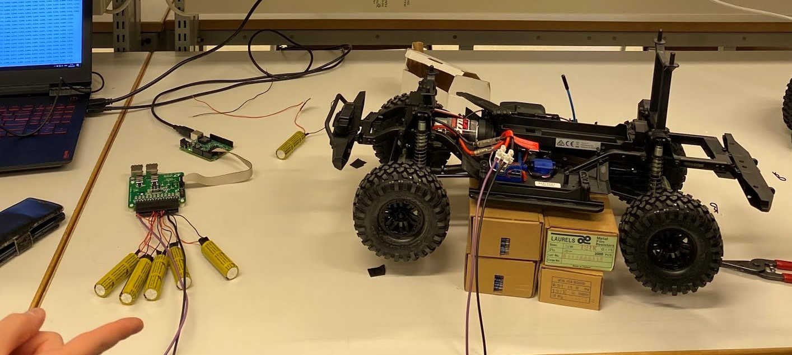
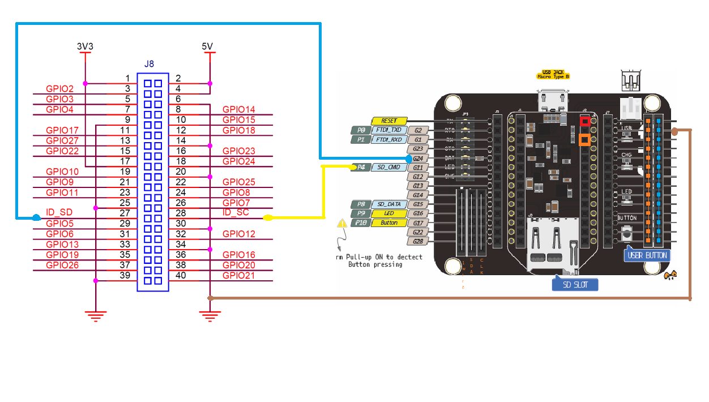
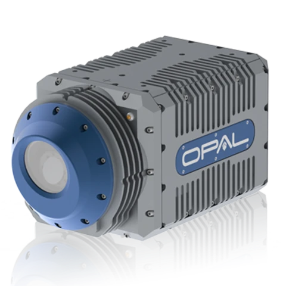
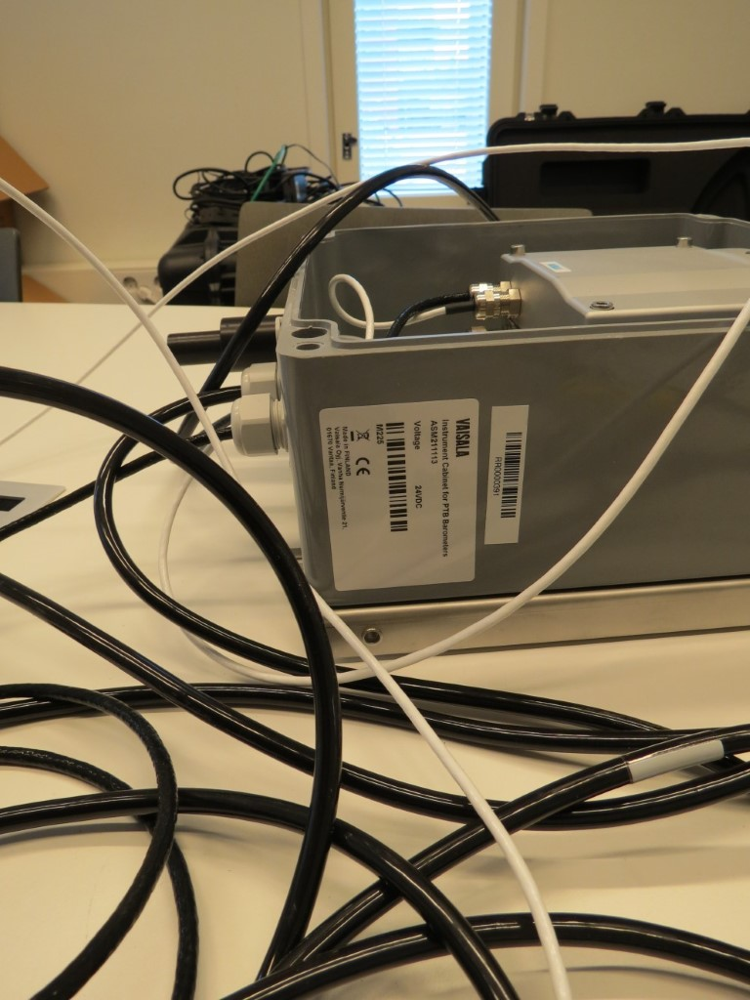

Amir Farhadi
Hardware test, field instrumentation, and embedded systems engineering background with extensive experience in benchtop verification (DMMs, oscilloscopes, DC power supplies), serial communications (UART, I2C, SPI, RS-232/485), cellular IoT telemetry (LTE-M/NB-IoT), and automated test harness scripting.
Core Competencies
🔬 Benchtop Test & Instrumentation
Hands-on validation using multi-channel digital multimeters, oscilloscopes, benchtop DC power supplies, and signal analyzers for hardware characterization and fault isolation.
⚡ Sensor & Industrial Protocols
Low-level driver implementation and protocol debugging across UART, I2C, SPI, RS-232, RS-485, and Modbus for precision environmental and power monitoring.
📶 Cellular IoT & Telemetry Gateways
End-to-end cellular telemetry architectures using Pycom GPy (ESP32 + LTE-M/NB-IoT), Raspberry Pi 4 gateways, MQTT, InfluxDB, and STUN/ICE NAT traversal.
🐍 Automated Test Scripting & SOPs
Developing programmatic test suites in Python (pytest, pySerial), C/C++, and Win32 APIs with rigorous Standard Operating Procedures (SOPs) and pass/fail logging.
1. Multi-Cell Battery Management System (BMS) Test Bench & Validation
TUAS Capstone EngineeringDesigned, assembled, and validated a multi-cell Lithium-ion Battery Management System (BMS) test bench. Implemented precision cell monitoring, active/passive cell balancing validation, and safety cutoff trips under simulated charge/discharge fault conditions.
- Monitoring IC: Linear Technology LTC6811 multi-cell high-voltage battery stack monitor.
- Cell Balancing: Dedicated resistive bleed-off networks with thermal dissipation profiling.
- Isolation & Bus: SPI isolated communication interface to host microcontroller.
- Power Stages: High-current MOSFET protection switches and precision current shunts.
- Voltage Accuracy: Calibrated cell voltage measurement down to ±1.2mV accuracy across 12 channels.
- Safety Cutoff Verification: Verified instant trip triggers for Over-Voltage (>4.20V) and Under-Voltage (<2.80V).
- Thermal Protection: NTC thermistor array testing to trigger shutdown at >60°C pack temperature.
- Benchtop Simulation: Multi-output programmable DC power supply swept across cell state curves.

2. 5G & Cellular IoT Urban Environmental Station
EU Horizon 2020 RESPONSE / City of Turku / MegaSenseEngineered, bench-tested, and deployed outdoor cellular IoT particulate matter monitoring stations. Integrated optical laser sensors with dual-core ESP32 microcontrollers and Raspberry Pi 4 edge nodes transmitting telemetry via LTE-M / NB-IoT cellular modems.
- Aerosol Sensor: Sensirion SPS30 optical particulate matter sensor (PM1.0, PM2.5, PM4, PM10 mass concentration & particle counts).
- Cellular Microcontroller: Pycom GPy (ESP32 SoC + Sequans Monarch LTE-M / NB-IoT modem).
- Edge Gateway: Raspberry Pi 4 Model B (4GB) running Docker microservices.
- Enclosure & Power: Custom IP65 weatherproof enclosure with regulated 5V/3.3V power distribution.
- UART / I2C Characterization: Validated sensor polling rates and frame checksum verification under MicroPython.
- Cellular Failover & Buffer: Programmed local flash ring buffer to prevent data loss during cellular network dropouts.
- NAT Traversal Diagnostics: Engineered STUN/ICE diagnostic logging for remote connectivity across carrier-grade NAT.
- Time-Series Ingestion: InfluxDB + RabbitMQ + Grafana telemetry pipeline for live environmental monitoring.


3. Autonomous Marine LiDAR & Environmental Sensor Array Evaluation
TUAS Maritime / Froude Project / Awake.ioEvaluated, integrated, and bench-tested multi-spectral LiDAR and meteorological sensor arrays for autonomous maritime vessel collision avoidance. Developed real-time data ingestion pipelines connecting solid-state LiDAR, optical cameras, and industrial weather transmitters.
- LiDAR Systems: Intel RealSense L515 solid-state LiDAR (2M-pixel depth + RGB + IMU) and Livox MID-14 / TELE-15 long-range units.
- Atmospheric Sensors: Vaisala PTU-307 pressure/temperature/humidity transmitter and Vaisala PWD-20 visibility / present weather sensor.
- Compute Nodes: Raspberry Pi 4 edge nodes and Neousys Nuvo-6108GC rugged industrial GPU PC.
- Physical Interfaces: RS-232 / RS-485 serial communication lines (9600 8N1) and Gigabit Ethernet (GigE Vision).
- Point Cloud Processing: Extracted and filtered 3D point cloud geometries in Polygon File Format (
.ply) usingpyrealsense2. - ROS Integration: Configured ROS (Robot Operating System) nodes on Raspberry Pi for depth stream publishing and coordinate transformation.
- Environmental Validation: Analyzed laser attenuation, false returns, and point density under simulated maritime weather conditions (fog, rain, ambient glare).
- Serial Parsing: Built automated serial stream parsers converting NMEA and Vaisala ASCII output into structured diagnostic packets.


4. Hardware-in-the-Loop (HIL) & Low-Latency IPC Test Automation Harness
Test Automation & IPC ArchitectureEngineered high-speed test harnesses and hardware interfacing bridges for automated device validation. Designed low-latency polling loops, inter-process communication (IPC) channels, and programmatic test suites to replace manual testing with high-throughput automated verification.
- Low-Latency Polling: Sub-10ms event loop polling designed with Win32 APIs, COM interfaces, and Windows UIAutomation.
- Hardware Bridges: Custom USB HID multi-channel test fixtures for physical state verification and loopback tests.
- Inter-Process Messaging: High-speed IPC channels linking low-level drivers with Python verification test runners.
- Automated Regression: Automated 100+ manual validation steps into repeatable continuous test suites with pass/fail telemetry.
- Fault Injection Testing: Simulated packet dropouts, interface disconnects, and buffer overflows to verify failsafe recovery.
- Execution Speed: Reduced end-to-end hardware verification cycle time by over 80% with automated pass/fail reporting.
Technical Equipment, Protocols & Tooling Matrix
Laboratory & Field Capabilities| Domain | Tools & Hardware Platforms | Practical Applications |
|---|---|---|
| Benchtop Test & Measurement | Digital Multimeters (Fluke, Keysight), Digital Storage Oscilloscopes, Programmable DC Power Supplies, Signal Generators, Logic Analyzers. | Circuit debugging, waveform capture, power rail ripple analysis, voltage/current threshold verification. |
| Communication Protocols | UART, I2C, SPI, RS-232, RS-485, Modbus RTU, USB HID, GPIO, CAN / ARINC concepts. | Sensor interfacing, edge telemetry, industrial bus communication, loopback hardware testing. |
| Embedded & Edge Hardware | Pycom GPy (ESP32 SoC + LTE-M/NB-IoT), Raspberry Pi 4 (Linux/ROS), STM32, Arduino, Nuvo Industrial GPU IPCs. | Cellular telemetry nodes, ROS sensor fusion, embedded control systems, remote monitoring stations. |
| Software, Scripting & Data | Python (pytest, pySerial, pyrealsense2), MicroPython, C/C++, InfluxDB, RabbitMQ, Grafana, Docker, PowerShell. | Automated test harnesses, telemetry pipelines, real-time dashboarding, containerized services. |
| Quality, Safety & Process | Standard Operating Procedures (SOPs), Hardware Verification Plans, Root Cause Analysis (RCA), ESD Safe Handling. | Executing repeatable test procedures, documentation of pass/fail criteria, lab safety compliance. |